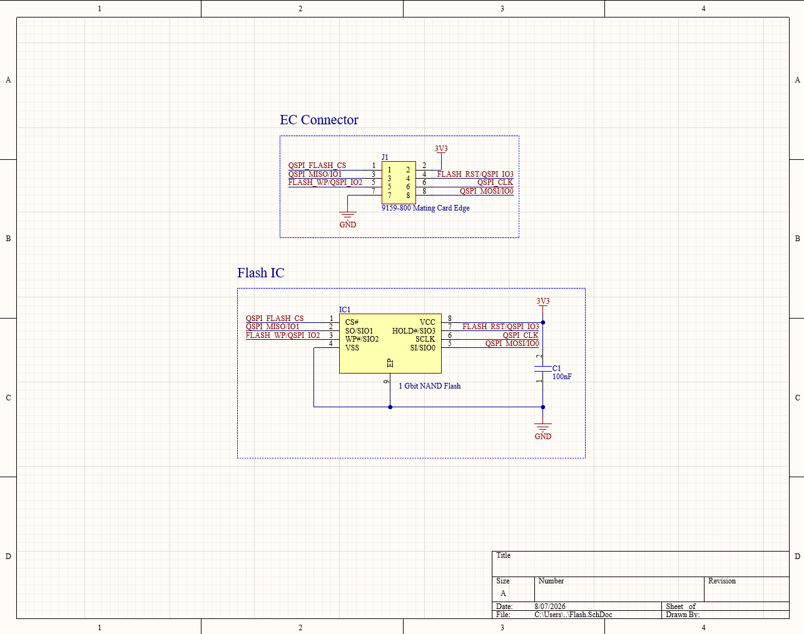
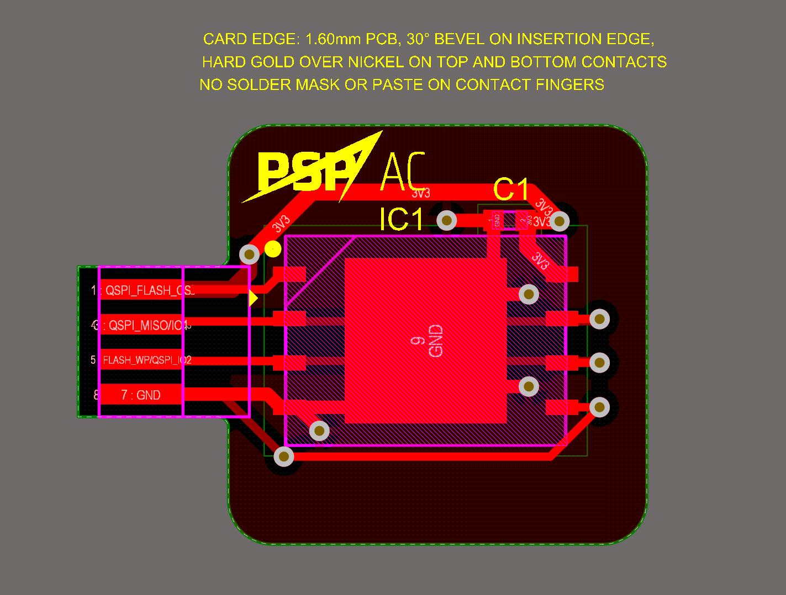
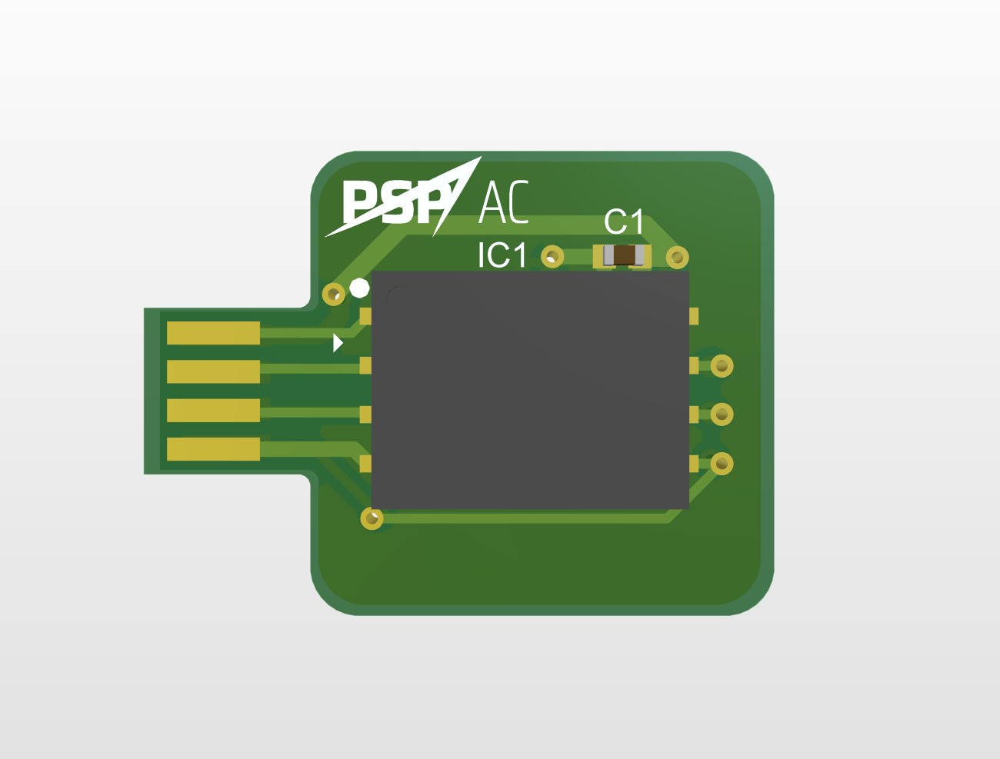

Engine Controller Flash Daughterboard



Overview
This project is a compact two-layer daughterboard designed to expand the nonvolatile storage available to our team's engine controller board. The board integrates a 1-Gbit QSPI flash device through a board-to-board connector carrying power, ground, clock, chip-select, and four bidirectional data signals.
More details
The design uses an ISSI IS25LP512M-series flash memory device with local decoupling and short, direct routing between the connector and memory interface. Clock and QSPI data lines were kept compact and referenced to a continuous ground plane, while the power path was widened and supported with nearby ground stitching. The schematic and two-layer PCB were completed in Altium Designer and checked through ERC and DRC before handoff.